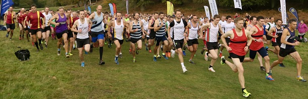

The first match of the 2018/19 season took place in Knole Park on Sunday November 4th.
In perfect conditions, the 530 runners, including 46 from Sevenoaks AC, raced over the tough 6-mile course, writes Jim Knight. From the start close to the main gate, the runners wound up past Knole House and onto Broad Walk to the top of the park and back down the Gallops before repeating the loop and finishing back near the main gate. It’s hilly all the way - a really tough course.
The race was won by Jay Smith of Dartford Road Runners in an impressive time of 31.28, closely followed by Simon Fox of Petts Wood Runners and Simon Jones of Canterbury Harriers.
The fastest Sevenoaks runner was John Witton in 34.41 to claim 14th position, with Guillaume Nineven just 2 seconds behind in 15th.
Becky Morrish of Petts Wood was the fastest woman in 36.12, followed by Jemma Whyman of Medway & Maidstone, and Laura Portway of New Eltham Joggers.
Sevenoaks’ fastest women were Heather Fitzmaurice and Marion Van Lille in 19th and 20th places, respectively. Bridgit Weekes, in her first race for the club came 2nd W60.
The Sevenoaks men’s team of John Witton (14th, 3rd M40), Guillaume Nineven (15th), Allan Thurston (28th), Darius Sarchar (31st, 5th M45), Andrew Hutchinson (32nd), and M50 runners Keith Dowson (39th overall, 3rd M50 and 1st M55) and James Baker (105th) came 4th.
The women’s team of Heather Fitzmaurice (5th W45), Marion van Lille, Amy Edwards and Pauline Dalton (2nd W50) came 5th.
The combined SAC team came 4th - a good result, given the strength of the leading teams – Petts Wood (who fielded 56 runners - 1st), Paddock Wood (2nd), and Dartford Road Runners (3rd).
It was good to see 13 new runners representing Sevenoaks AC for the first time in the Kent fitness League – Guillaume Nineven, Allan Thurston, Mike Lochead, Graham Cook, Chris Palmer, Jatinder Soomal, Amy Edwards, Andy Manning, Toby Fitzmaurice, Bridgit Weekes, Diana Bryant, Elaine Knight, and Rhea Malkin.
In the junior races, Harvey Taylor came 3rd in the U17 race, and James Emmett, William Hurst, Freddie Naughton, Teddy Fitzmaurice and Tia Rainey all competed with distinction in the U15 race.
The Kent Fitness League is a series of cross-country races between the 18 registered Athletics Clubs in Kent. Any number of club members can compete, but 12 are needed to score in the team competition – 8 men (of whom two must be V50 and one V40) and 4 women (of whom one must be V45 and one V35).
The next race in the series will be in Swanley Park on Sunday Nov 11th, starting at 11.00.
If you enjoy running and would like to improve, Sevenoaks AC is currently making a special offer to new members. You can attend up to 3 training sessions free of charge before deciding whether or not to join.
The SAC results were:
| Ov Pos | Lg Pos | Runner | Age | Time | Club | Rating | # Races |
|---|---|---|---|---|---|---|---|
| 15 | 14 | John Witton | 40 | 34:41 | Sevenoaks AC | 96.35 | 3 |
| 16 | 15 | Guillaume Nineven | 33 | 34:43 | Sevenoaks AC | 96.07 | Debut |
| 29 | 28 | Allan Thurston | 43 | 36:00 | Sevenoaks AC | 92.42 | Debut |
| 30 | 29 | Lee Lintern | 38 | 36:01 | Sevenoaks AC | 92.13 | 30 |
| 32 | 31 | Darius Sarshar | 49 | 36:08 | Sevenoaks AC | 91.57 | 5 |
| 34 | 32 | Andrew Hutchinson | 39 | 36:14 | Sevenoaks AC | 91.29 | 4 |
| 41 | 39 | Keith Dowson | 55 | 36:34 | Sevenoaks AC | 89.33 | 15 |
| 46 | 44 | Andrew Milne | 36 | 36:45 | Sevenoaks AC | 87.92 | 16 |
| 53 | 51 | Mike Lochead | 32 | 37:03 | Sevenoaks AC | 85.96 | Debut |
| 56 | 54 | Jimmy George | 37 | 37:13 | Sevenoaks AC | 85.11 | 2 |
| 57 | 55 | Russell Crane | 36 | 37:14 | Sevenoaks AC | 84.83 | 3 |
| 67 | 65 | Graham Cook | 42 | 37:32 | Sevenoaks AC | 82.02 | Debut |
| 69 | 67 | Keith Brown | 47 | 37:43 | Sevenoaks AC | 81.46 | 12 |
| 87 | 85 | Chris Palmer | 37 | 38:18 | Sevenoaks AC | 76.40 | Debut |
| 90 | 88 | Daniel Witt | 43 | 38:21 | Sevenoaks AC | 75.56 | 46 |
| 104 | 99 | Simon Truett | 44 | 38:56 | Sevenoaks AC | 72.47 | 2 |
| 111 | 105 | James Baker | 53 | 39:10 | Sevenoaks AC | 70.79 | 18 |
| 112 | 106 | Jim Harness | 51 | 39:14 | Sevenoaks AC | 70.51 | 4 |
| 124 | 116 | James Wright | 50 | 39:43 | Sevenoaks AC | 67.70 | 25 |
| 130 | 122 | Graham Dwyer | 46 | 40:01 | Sevenoaks AC | 66.01 | 3 |
| 147 | 136 | Andy Evans | 48 | 40:41 | Sevenoaks AC | 62.08 | 39 |
| 153 | 142 | Nick Holmes | 42 | 40:56 | Sevenoaks AC | 60.39 | 3 |
| 160 | 148 | Jatinder Soomal | 36 | 41:11 | Sevenoaks AC | 58.71 | Debut |
| 163 | 150 | Chris Desmond | 55 | 41:17 | Sevenoaks AC | 58.15 | 80 |
| 190 | 19 | Heather Fitzmaurice | 48 | 42:16 | Sevenoaks AC | 89.53 | 71 |
| 191 | 20 | Marion Van Lille | 33 | 42:17 | Sevenoaks AC | 88.95 | 2 |
| 215 | 26 | Pauline Dalton | 54 | 43:04 | Sevenoaks AC | 85.47 | 41 |
| 238 | 203 | Tony Waldron | 51 | 43:48 | Sevenoaks AC | 43.26 | 24 |
| 250 | 37 | Amy Edwards | 39 | 44:23 | Sevenoaks AC | 79.07 | Debut |
| 257 | 215 | Andy Manning | 50 | 44:43 | Sevenoaks AC | 39.89 | Debut |
| 264 | 221 | Duncan Cochrane | 61 | 44:59 | Sevenoaks AC | 38.20 | 25 |
| 271 | 225 | Toby Fitzmaurice | 18 | 45:36 | Sevenoaks AC | 37.08 | Debut |
| 273 | 45 | Bridgit Weekes | 60 | 45:40 | Sevenoaks AC | 74.42 | Debut |
| 274 | 46 | Nicki Thompson | 42 | 45:42 | Sevenoaks AC | 73.84 | 19 |
| 280 | 230 | Hugh Shewell | 29 | 45:54 | Sevenoaks AC | 35.67 | 15 |
| 282 | 48 | Sarah Shewell | 59 | 45:56 | Sevenoaks AC | 72.67 | 103 |
| 285 | 233 | Simon Hallpike | 65 | 46:00 | Sevenoaks AC | 34.83 | 47 |
| 306 | 54 | Diana Bryant | 43 | 46:46 | Sevenoaks AC | 69.19 | Debut |
| 308 | 55 | Elaine Knight | 38 | 46:47 | Sevenoaks AC | 68.60 | Debut |
| 320 | 260 | Geoff Kitchener | 68 | 47:07 | Sevenoaks AC | 27.25 | 68 |
| 327 | 59 | Ella Pyman | 51 | 47:27 | Sevenoaks AC | 66.28 | 8 |
| 364 | 76 | Grazia Manzotti | 49 | 49:21 | Sevenoaks AC | 56.40 | 6 |
| 367 | 78 | Rhea Malkin | 33 | 49:34 | Sevenoaks AC | 55.23 | Debut |
| 406 | 307 | Lionel Stielow | 69 | 51:44 | Sevenoaks AC | 14.04 | 9 |
| 505 | 345 | Joe Parsons | 28 | 1:01:33 | Sevenoaks AC | 3.37 | 18 |
The full results are here.
